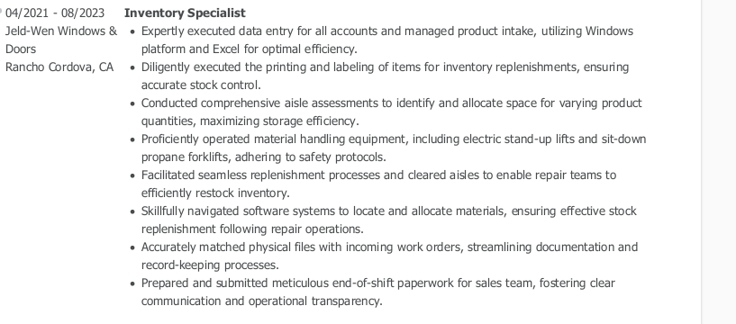
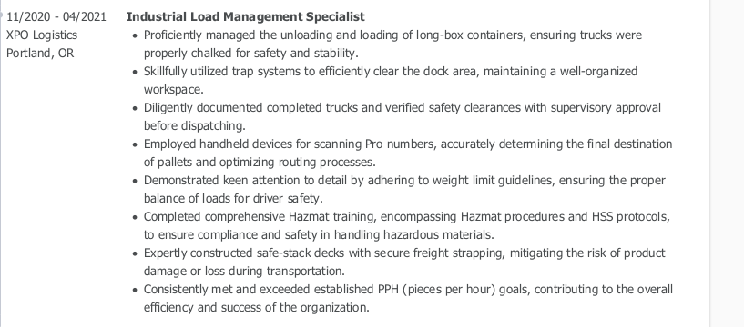

Cameron C. Stites (Front-End Software Engineer)

Indeed Profile
Summary:
I'm currently working towards being a Front-End Software Engineer.
I'll be keeping this moderately light - I've worked in the Automation Industry,
Robotics and Maintenence DEPT- Specializing in Repairs, Recovery and Reconnection.
As well as record keeping practices for Inventory Control.
Education:
El Camino Fundamental HighSchool GPA:3.01
Work Experience:

- 
- 
-Preview of Previous Employment-
Skills:
- Detail Oriented
- HTML + Excel
- SuperNatural Communication
- Data Management
- Project Management
Achievements + Goals:
- Highest Pick Per Hour Count @ XPO Logistics (Back to Back Champ).
- Formatted Aruba Bridges - Reaching Goals for Active Bots in Structure.
- Audited for Quality Control - Many Reported "Good Status"/"No Errors" After I've Had them.
- My Goals Involve becoming a Front-End Developer - Learning Absolutely Everything -
Even Back-End, & More.. I want be constantly introduced to New things.
Open to All Challenges & Opportunities - "Positive Growth" is something I Always have on my mind
Other:
My hobbies
Contact Me